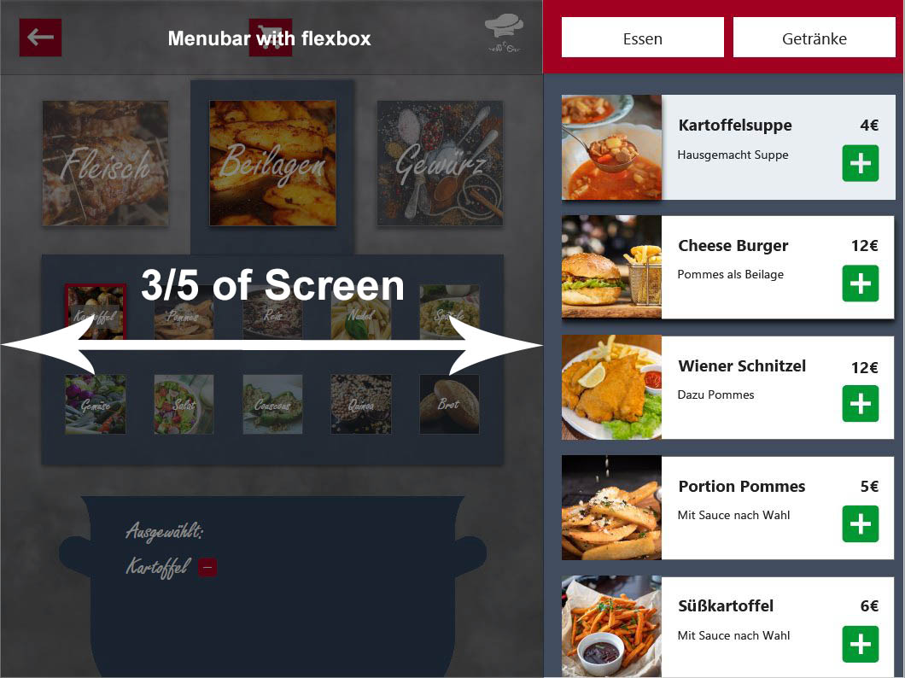

Menu Screen Layout
The general menu screen is also devided into segments. The side menu, where the actual dishes can be seen and selected uses 2 fifths of the total screen width, whereas the filter screen uses 3/5 of the total width.
The right part is refreshed and reloaded everytime something happens in the left part
The Menu Bar
The menu bar consits out of three 50x50px icons, which are:
- A back button which takes you to whatever screen you visited before
- The shopping cart, which takes you to your current order
- The logo, which takes you to the welcome and starting page
The icons are all equally spread out via justify-content: space-between;
The total height of the menu bar, as well as the height of the heading of the side menu is 90px!
